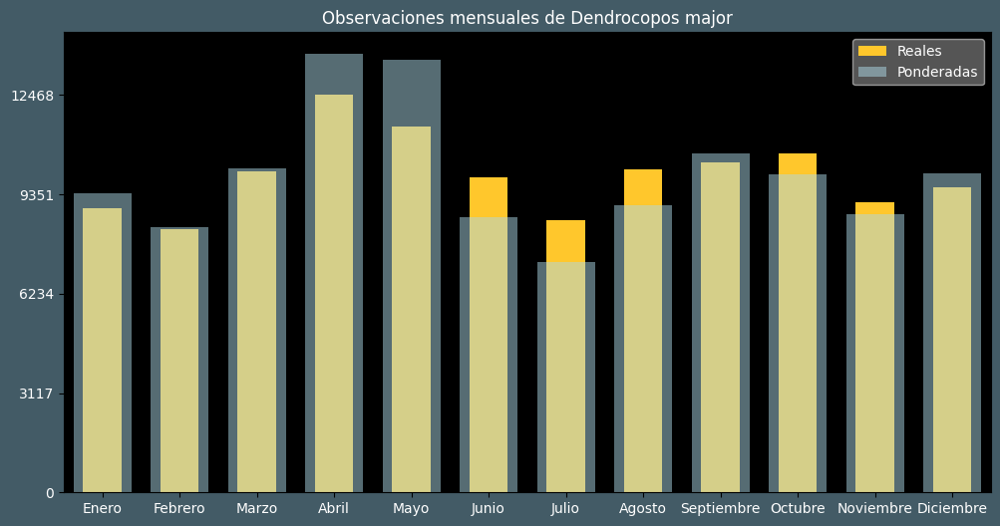

Observaciones por mes
Observations por hora

Categoría IUCN: LC
Género: Dendrocopos
Familia: Picidae
Orden: Piciformes
Descubrimiento: Linnaeus (1758)
| Idioma | Nombre |
|---|---|
| Afrikaans (af) | ? |
| Arabic (ar) | ? |
| Belarusian (be) | Вялiкi дзяцел |
| Bulgarian (bg) | Голям пъстър кълвач |
| Catalan (ca) | Picot garser gros |
| Chinese (zh) | 大斑啄木鸟 |
| Chinese traditional (zh-TW) | 大斑啄木 |
| Croatian (hr) | Veliki djetlić |
| Czech (cs) | Strakapoud velký |
| Danish (da) | Stor flagspætte |
| Dutch (nl) | Grote bonte specht |
| English (en) | Great spotted woodpecker |
| Estonian (et) | Suur-kirjurähn |
| Finnish (fi) | Käpytikka |
| French (fr) | Pic épeiche |
| German (de) | Buntspecht |
| Greek (el) | Πευκοδρυοκολάπτης |
| Hebrew (he) | נקר עקוד |
| Hungarian (hu) | Nagy fakopáncs |
| Icelandic (is) | Barrspæta |
| Indonesian (id) | ? |
| Italian (it) | Picchio rosso maggiore |
| Japanese (ja) | アカゲラ |
| Korean (ko) | 오색딱다구리 |
| Latvian (lv) | Dižraibais dzenis |
| Lithuanian (lt) | Didysis margasis genys |
| Maceodnian (mk) | Голем клукајдрвец |
| Malayalam (ml) | ? |
| North_sami (se) | Bihcebásčáihni |
| Norwegian (no) | Flaggspett |
| Persian (fa) | دارکوب خالدار بزرگ |
| Polish (pl) | Dzięcioł duży |
| Portuguese (pt) | Pica-pau-malhado-grande |
| Russian (ru) | Большой пёстрый дятел |
| Serbian (sr) | Veliki detlić |
| Slovak (sk) | Ďateľ veľký |
| Spanish (es) | Pico picapinos |
| Swedish (sv) | Större hackspett |
| Thai (th) | ? |
| Turkish (tr) | Orman alaca ağaçkakanı |
| Ukrainian (uk) | Дятел звичайний |